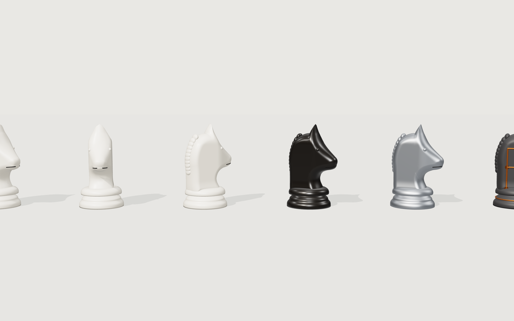
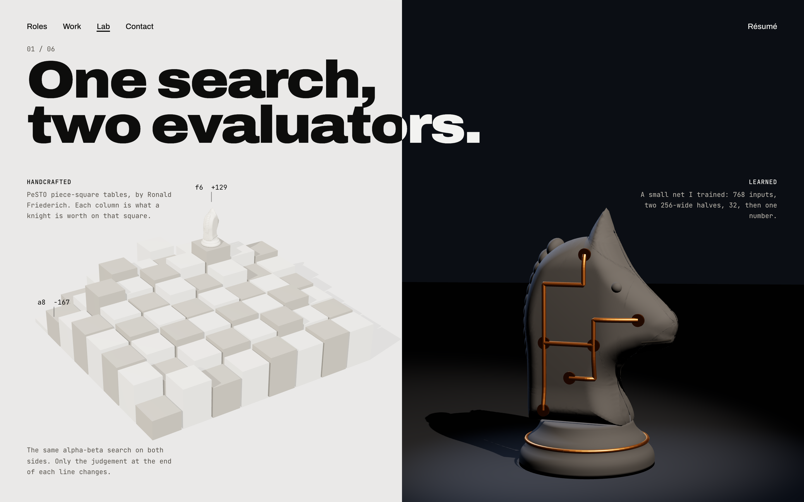
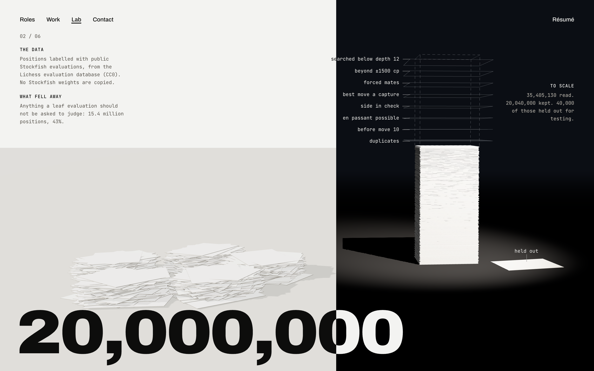

Before and after for each item that was still rough. Every other frame was re-rendered with the new knight.
Knights: modelled properly
Was a flat extruded slab. Now the same Staunton silhouette inflated into a rounded volume: thinner at the muzzle and ears, fuller at the neck, with a braided mane, eyes and a mouth line. The learned knight's copper circuit follows the curved surface.

after · study: ivory from three angles, ebony, aluminium, learnedafter · lab2-1after · work-c

before · lab2-1, slab knight
Chapter 2: spilled sheets on white
Fixed in round 2: each sheet's edges are darker than its face, so the pile draws its own outline on the white side.
after

before
Chapter 5: heaps, not columns
Fixed in round 2: each dropped stone slides to the lowest of several nearby rests, and the heaps are wider, so they settle into low piles.